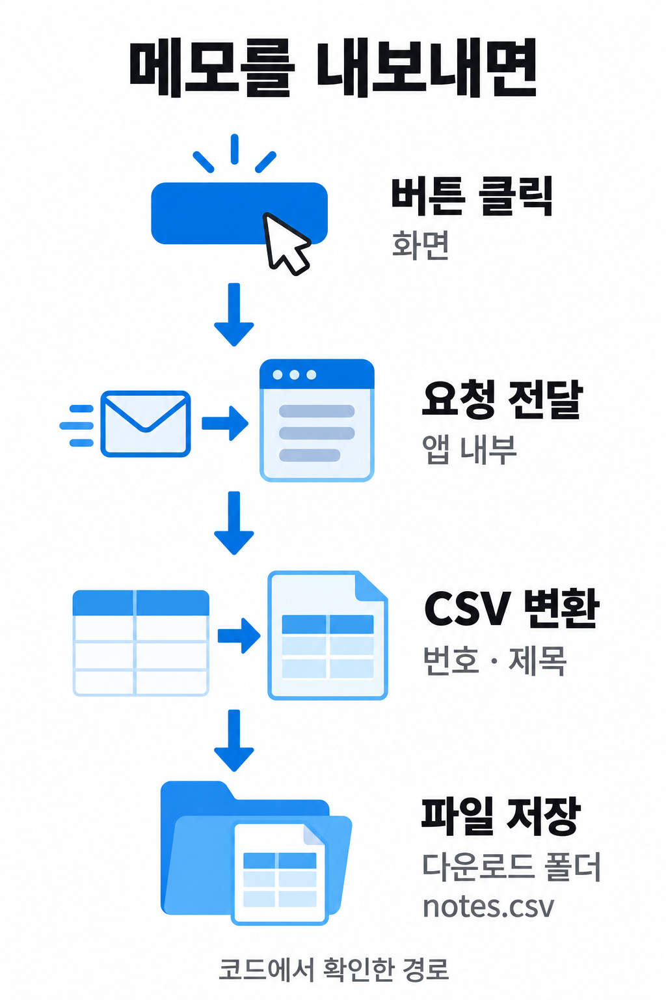
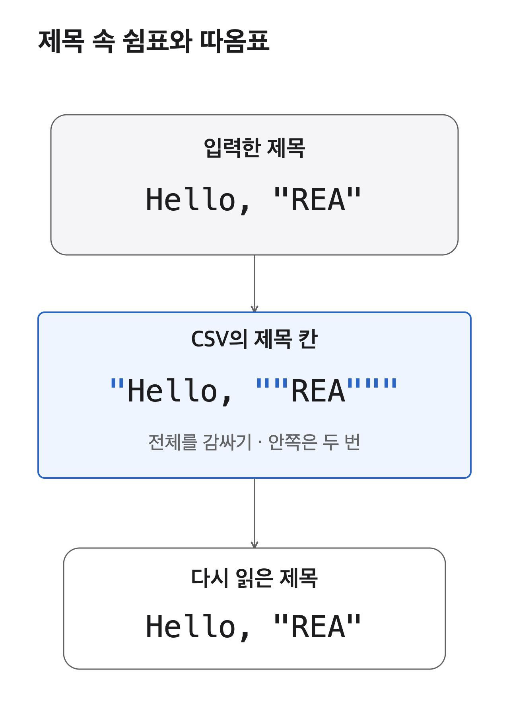

<!doctype html><html lang="ko"><meta charset="utf-8"><title>REA 설명 그림 검토</title><style>html{scrollbar-width:none}html::-webkit-scrollbar{display:none}body{margin:0;padding:20px;background:white;color:#1d1d1f;font:16px system-ui}figure{margin:0 auto 48px;width:min(540px,100%)}img{display:block;width:100%;height:auto}figcaption{margin-top:12px;font-size:14px;line-height:1.6} @media(max-width:400px){body{padding:20px}figure{width:100%}}</style><figure><figcaption>저장 흐름 · 설명 그림</figcaption></figure><figure><figcaption>CSV 제목 칸 변환 · 설명 그림</figcaption></figure></html>